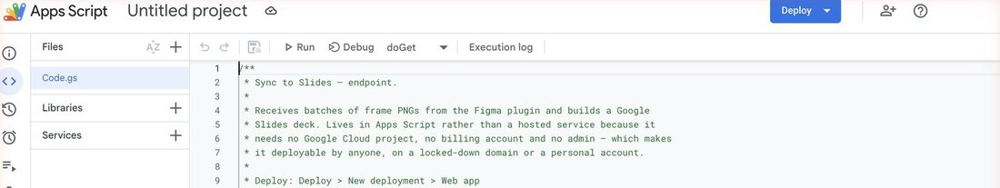
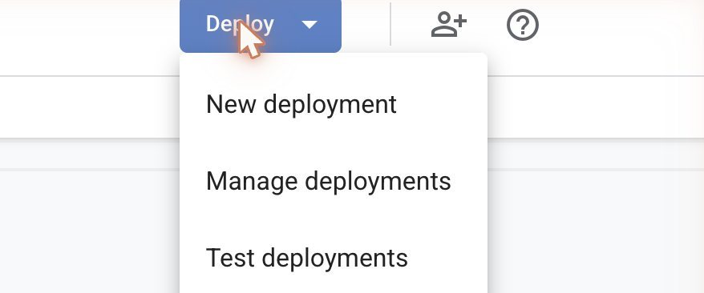
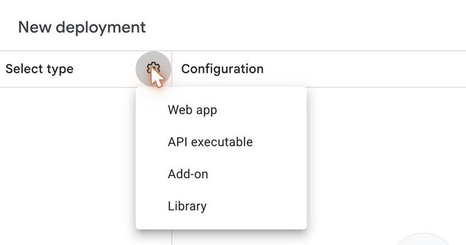
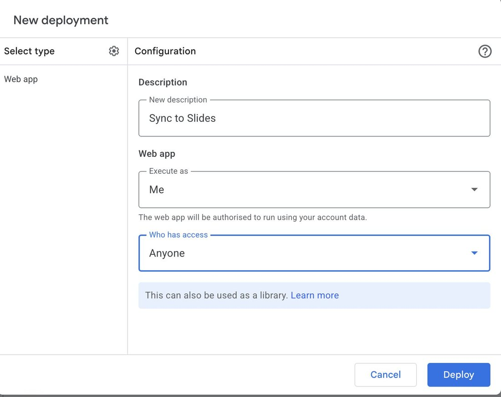
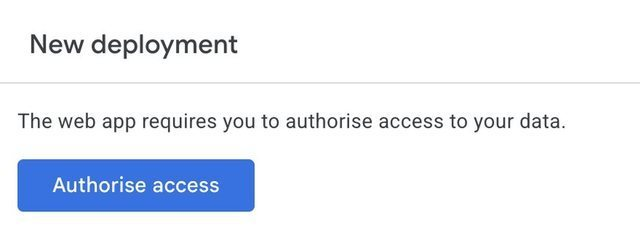

Pick your tool.
Two separate tools. Each one works on its own — set up one, or both. Every step is on its page, in order.
Select your boards in Figma, press one button, and get a Google Slides deck — one slide per board. Next round, it updates the same deck.
Figma CommunitySet up once · 5 min Show me how Chrome Extension Tidy the deckIn Google Slides, click an image and press ⌘ V — the new image drops into the exact same spot and size. Press 1 2 3 to tag a slide.
Google ChromeSet up once · 2 min Show me howYour boards live in Figma and end up in Slides? Get the plugin.
You spend time fixing up Slides decks? Get the extension.
Both? Most people want both. Order doesn’t matter.
Boards in, deck out.
Select frames in Figma, press one button, and they land in a Google Slides deck — one slide per frame, in canvas order.
Before you start
- Figma, signed in with your work account.
- Your work Google account, signed in.
- Five minutes, once. After that it’s one button.
Add it to Figma.
-
1
Open it from Figma Community.
It’s on the Howatson profile. Nothing to download.
- Click Open in Figma below.
- On the plugin page, click Open in… and pick any file.
The Squire opens in your file. From now on it’s under Plugins → Slides Squire in every file.
Page says 404? Install it from a file instead
- Download the zip (version 0.29.1), unzip it, and move the folder into Documents — not Downloads. Figma loads it from there every time.
- In the Figma desktop app: Plugins → Development → Import plugin from manifest… and pick
manifest.jsonin that folder.
Connect it to Google.
The plugin needs a small helper script in your own Google Drive to build the deck. You make it once. It’s yours, nobody else can see it, and every deck it makes is in your Drive.
-
2
Open a blank script.
This opens Google Apps Script in a new tab. If it asks you to sign in, use your work Google account.
A page called Untitled project with a few lines of code in it.
-
3
Paste in the Squire’s script.
- Back in Apps Script, click into the code.
- ⌘ A to select it all, then Delete.
- ⌘ V to paste, then ⌘ S to save.
Copy button not working? Copy it by hand

The code now starts with
/**and runs to about 700 lines. -
4
Click Deploy, then New deployment.
The blue Deploy button, top right of the page.

-
5
Click the cog, choose Web app.
The window opens empty. The cog is next to Select type, top left.

-
6
Set two dropdowns, then Deploy.
- Execute as: Me
- Who has access: Anyone
- Click Deploy.
Just “Anyone” — not “Anyone with a Google account”. Figma can’t sign in to Google, so anything else blocks it. Description can be anything, or blank.

-
7
Let Google in.
- Click Authorise access, and pick your work account.
- Google says “Google hasn’t verified this app”. Click Advanced (small, bottom left).
- Click Go to Untitled project (unsafe).
- Click Allow.
It’s warning you about the script you made two minutes ago. That’s fine — it’s yours.

-
8
Copy the Web app URL.
Click Copy under Web app URL, then Done.
The link ends in
/exec.Keep this link to yourself. Anyone with it can drop slides into your Drive.
Web app URLCopy -
9
Paste it into the plugin.
- In Figma: Plugins → Slides Squire.
- Paste the link into the box.
- Click Save endpoint.
The panel changes to I await thy command, m’lord. You’re set up, for good.
Slides SquirePluginius FigmataXXIXWhere's the castle, m'lord?
Use it.
Open the plugin from Plugins → Slides Squire.
-
A
Make a new deck.
- Select your frames — or click the section they sit in.
- Leave New Deck picked, and type a name.
- Top right, pick the image quality: Horse for best, Pigeon for quick.
- Click At once, m’lord.
The panel counts your boards. If it says I await thy command, nothing is selected.
Slides SquirePluginius FigmataXXIX24 boards, m'lord
-
B
Wait for the button to fill.
The button turns into a progress bar. About two seconds a board. Leave the plugin open until it’s done.
Slides SquirePluginius FigmataXXIXHard upon the road · 9 of 24
-
C
Click Inspect the goods.
That opens your deck. One slide per frame, in the order they sit on the canvas.
The plugin has switched to Update Deck, with this deck’s link already in the box — ready for next round.
Slides SquirePluginius FigmataXXIXDelivered, m'lord.
Next round: press it again
Select the same frames, check Update Deck is picked, and press the button. Only frames that changed get sent. Comments in Slides stay where they were.
Horse or Pigeon? It’s image quality.
The switch top right of the panel.
Your own slides are safe
Title cards and dividers you add by hand are never touched, and nothing is ever deleted. Older deck? Click Update Deck and paste its link.
If it’s not working.
The line under the title turns red when nothing got through, orange when some of it did. Hover it for more detail.
It says “The bridge is drawn”
The plugin can’t reach your script. Nearly always step 6: Who has access isn’t set to Anyone.
Test it: paste your /exec link into Chrome. A short line of plain text means it’s fine. A Google sign-in page means redo step 6, choosing Anyone. The chain icon top right of the panel shows the link the plugin saved.
It says “Only 86 of 157 made it”
Not a failure — those 86 are in the deck. Press the button again. It works out what’s missing and sends the rest.
A board came out black
The frame has no background. Give the frame a fill colour in Figma and sync again.
The Figma link says 404
Figma only shows the plugin to people signed in with a work account. Sign in to Figma, then open the link again. Still a 404? Use Install it from a file, under step 1.
I installed it from a file and it vanished
Its folder was moved or deleted. Put it back in Documents (download it again if you need to) and import manifest.json again. Your Google setup is still fine.
Jasper says there’s a new version
- From Figma Community: nothing to do, Figma updates it for you. From a file: download it again and swap the new folder in for the old one, in the same spot in Documents.
- Only if he says the script changed too: copy the script again and paste over the old one (step 3). Then Deploy → Manage deployments, click the pencil, set Version to New version, and click Deploy. Your link stays the same.
Paste it where it goes.
In Google Slides, paste over an image and the new one keeps its size, spot and crop. Press a number to tag where a slide is at.
Before you start
- Google Chrome. Not Safari.
- Two minutes, once.
- It isn’t on the Chrome Web Store, so you load it from a folder. That’s normal.
Install it.
-
1
slides-squire-chrome-extension.zipin your Downloads
-
2
Unzip it, and move the folder into Documents.
- Double-click the zip. A folder called Slides Squire appears.
- Drag that folder into Documents.
Don’t leave it in Downloads. Chrome runs the extension from that folder. If it gets moved or cleaned up, the extension quietly stops working.
Slides Squirethe folder that was in the zipDocumentsleave it here for good -
3
Open Chrome’s extensions page.
Copy this address, paste it into Chrome’s address bar, and press Return. (Chrome won’t let a page link straight to it.)
chrome://extensionsYour extensions… -
4
Turn on Developer mode.
The switch is at the top right of that page. A new row of buttons appears.
Load unpackedPack extensionUpdate -
5
Click Load unpacked, pick the folder.
- Click Load unpacked (top left).
- Go to Documents and click the Slides Squire folder once — the folder itself, don’t open it.
- Click Select.
A Slides Squire card with the red S appears on the page.
Load unpackedPack extensionUpdateSlides Squire 2.29.0 -
6
Refresh your Slides tabs.
Any Google Slides tab that was already open needs a refresh: ⌘ R.
This card appears at the top of your deck. Drag it anywhere. The × hides it; click the red S in Chrome’s toolbar to bring it back. It works hidden, too.
Swap an image.
Three moves. No resizing, no dragging it back into place.
-
1
Copy the new image.
From Figma: select the frame and press ⇧ ⌘ C — that’s Copy as PNG.
Plain ⌘ C won’t work from Figma — it copies the layer, not a picture. From anywhere else (Finder, a browser) a normal copy is fine.
⇧+⌘+Cin Figma -
2
In Slides, click the image you’re replacing.
One click, so it’s selected. This is the step people skip.
-
3
Press ⌘V.
The new image takes the old one’s exact size, spot and crop.
The card says Set, and a fine choice, m’lord.
Nothing selected? ⌘ V works like normal Slides. Want to change the crop? Double-click the image, same as always.
Tag a slide.
Press a number and a tag drops into the top-right corner of the slide you’re on. Anyone who opens the deck can see where each slide is at.
-
1
Press 1, 2 or 3.
- Updated — feedback actioned since last round.
- Approved — signed off, nothing left to do.
- Exported — out the door.
Or click the tag on the card.
1Updated2Approved3Exported -
2
Change your mind any time.
- Press a different number to swap the tag.
- Press the same number again to remove it.
- Double-click a tag on the card to rename it for this deck.
The first time you tag a new deck, the Page setup window flashes open for a second. Leave it — it closes itself.
If it’s not working.
First, always: hard refresh the Slides tab with ⇧ ⌘ R. That fixes most things.
The card doesn’t show up in Slides
Hard refresh the tab (⇧ ⌘ R). Still nothing? Click the red S in Chrome’s toolbar — you may have hidden it. Still nothing? Open chrome://extensions and check Slides Squire is switched on.
The image landed huge, on top of everything
The old image wasn’t selected. Press ⌘ Z, click the old image once, then ⌘ V again.
Nothing pastes from Figma
Use ⇧ ⌘ C (Copy as PNG) in Figma, not plain ⌘ C.
The card says “I have failed you”
Slides didn’t take it. Click the image again and paste again. Hover the line on the card to see why.
The numbers don’t tag anything
You’re typing in a text box. Click an empty bit of the slide, then press the number.
It stopped working after I tidied my folders
The folder moved. In chrome://extensions, remove the old Slides Squire card, then redo step 5 pointing at the folder’s new home.
Jasper says there’s a new version
- Download it again and swap the new Slides Squire folder in for the old one, in the same spot in Documents.
- In
chrome://extensions, click the round reload arrow on the Slides Squire card. - Refresh your Slides tabs.
The Roman numeral on the card, next to Extensio Chromatica, tells you which version you’re on.